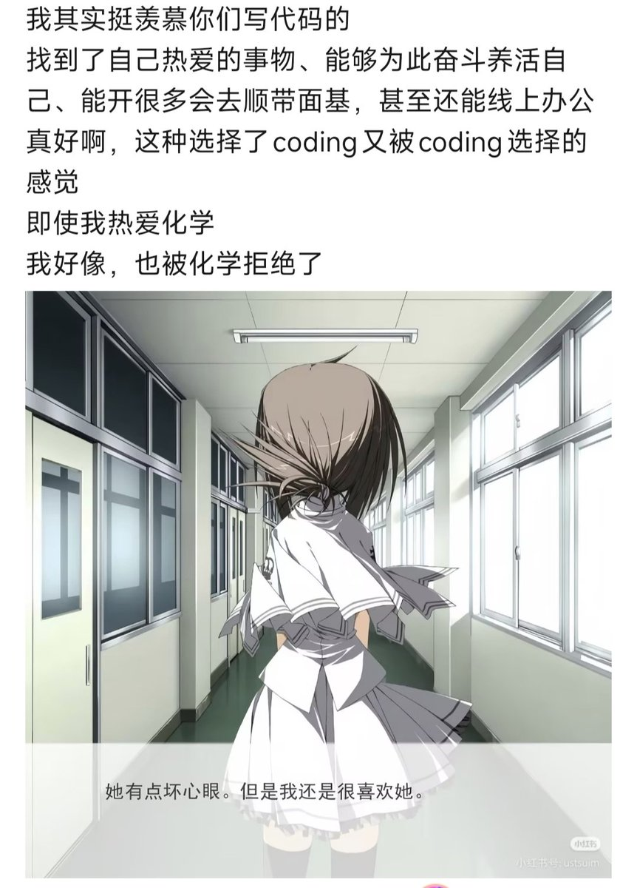

Rika☁️
@Rikka_Ela
他的呼吸越来越轻，像被风吹走的烟，他最后闭上眼，最后看见的，是初中第一节化学课，在灯光下，白茫茫的，黑板上H2+O2=H2O的方程式像一片海，或许他应该要听妈妈的话。当通风橱重新打开的时候，人们在实验室一具遗体上发现了一封信，上面写着“师妹，我希望你回家”

Hgしαмᵖ🍥裸奇环的梦
@HgLamp41974
倒不是说什么，只是
并没有天分，无论是实验上or理论上
靠着热爱学了很久，却也并没有达到能竞赛的水平，浑浑噩噩学到现在
总是摔碎一些仪器，搞砸一些反应
我以为热爱至少能够解决大部分的困难
回到八年前吧，撕碎那本化学书 https://t.co/RnUvUqI09U